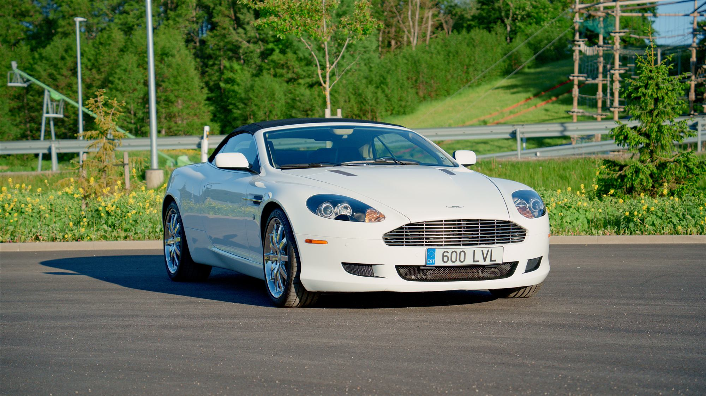

Grand Tourer

70 000 €
Aston Martin DB9
DB9 Volante – käsitsivalmistatud V12 grand tourer Gaydon'i töökodadest. AM04 mootor, 5935 cm³, 350 kW. Lahtine kere, valge, automaat käigukast, tagavedu. Esmane registreerimine 2008.
Uuri lähemalt
Tegemised sotsiaalmeedias.
Jälgi meie tegemisi sotsiaalmeedia kanalites, kus kajastame huvitavaid sõidukeid Eestis.
Jälgi tegemisi.
Ürituste kajastused ja uudised.
Autod Eestis.
Klassikaliste autode tutvustused, ülevaated.